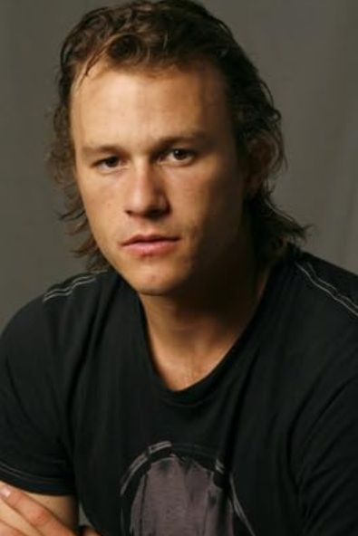

Introduction

Heath Ledger is one of my favorite artists whose talents transcend mere acting. When it comes to the profession of acting, there exists a small bit of controversy which poses the question: Is their performance acting or natural charisma? To exemplify this, compare Arnold Schwarzenegger to Heath Ledger. Schwarzenegger’s performances are usually the same across his body of works. That is, he is always presented as a larger-than-life person of massive proportions with an abundance of confidence. Some filmic examples of this include:
Conan the Barbarian (1982),
Commando (1985), and
Predator (1987).
On occasion, Schwarzenegger’s performances deviate from his typical roles as seen with Twins (1988) and Junior (1994). Here, Schwarzenegger adds comedy and lightheartedness to his otherwise brutally efficient characters. Regardless of which role he plays however, Arnold Schwarzenegger remains…well, Arnold Schwarzenegger. That is, each role is little more than Schwarzenegger the Barbarian, Schwarzenegger the father, Schwarzenegger the alien-fighter, Schwarzenegger the twin, and Schwarzenegger the pregnant scientist.
Heath Ledger, on the other hand, acts beyond his personal identity and charisma, morphing into the characters he plays. Doing so allows Ledger to become a completely new identity with a new charismatic quality in each role. We see this with 10 Things I Hate About You (1999), The Patriot (2000), and of course, The Dark Knight (2008). Here, Ledger becomes the bad boy love interest, the heroic-if-naïve soldier, and the maniacal madman with a smile.
Each new character presents audiences with a completely different set of personal characteristics, nuances, and depth which bring his characters to life. This level of acting goes beyond relying on one’s charisma and delivering lines as audiences are not watching the same actor playing different characters per se, but the different characters themselves. That is, viewers can more easily forget, in that 2-hour moment of suspended belief, that they are watching Heath Ledger. Instead, they become engrossed in Patrick Verona, Gabriel Martin, and the Joker (Ledger’s characters from the above films).
About Heath Ledger
Born in Perth, Western Australia, in 1979, Heath Ledger began his acting career with a small, uncredited, role as an orphan clown in the Australian made-for-tv movie, Clowning Around (1992). Ledger then appeared in 3 episodes of Ship to Shore (1993-1994) and across 26 episodes as Snowy Bowles in Sweat (1996). While his film debut came with playing the character of Toby in the Australian movie, Blackrock (1997), he did not come to the attention of American audiences until he played the Celtic prince, Conor, in the TV series, Roar (1997), which aired on FOX. It was not until after moving to the U.S. in 1998 that Ledger starred in 10 Things I Hate About You which cemented his film career.